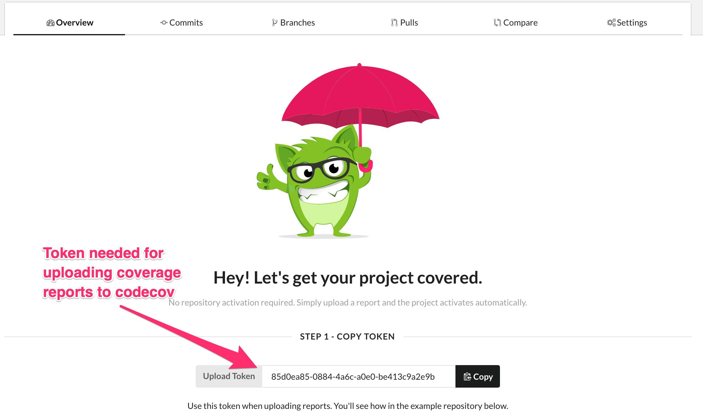
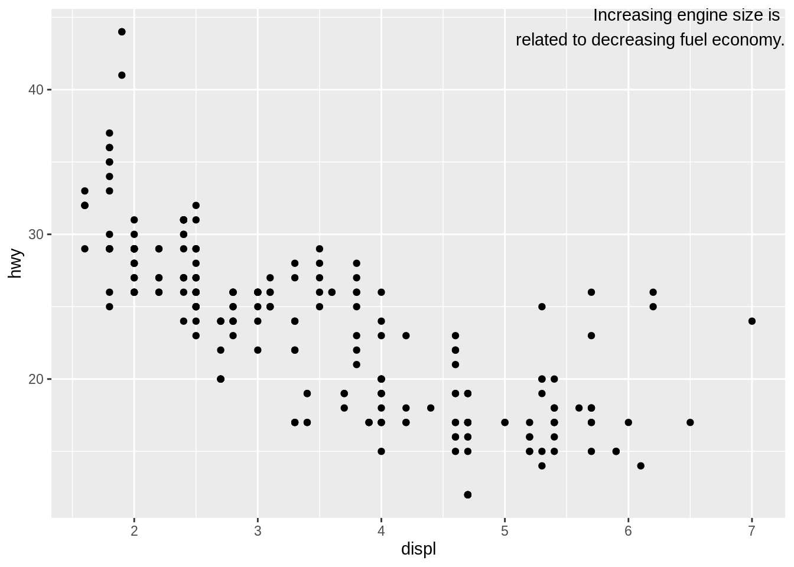
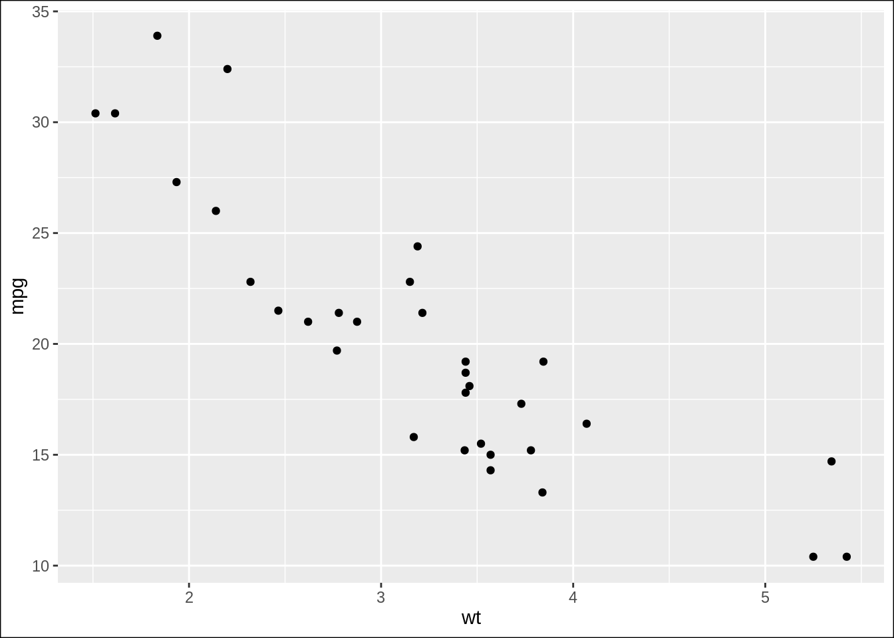
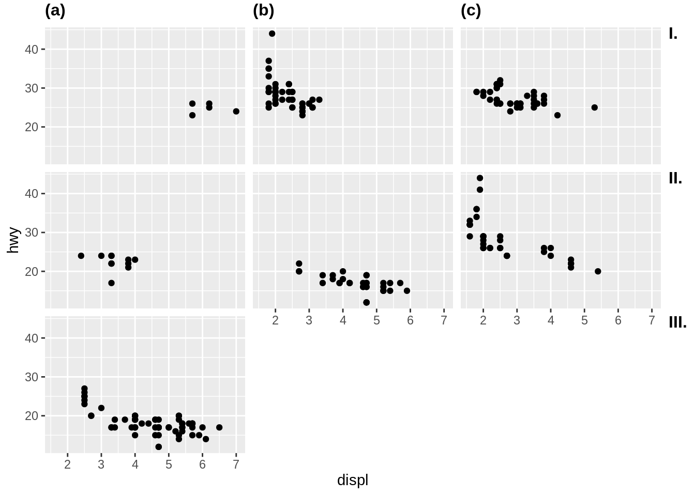

第1章 R 语言
1.1 安装和配置
1.1.1 安装
ubuntu 安裝 R
参考https://cran.r-project.org/bin/linux/ubuntu/README.html
CentOS 安装 R
升级 R 版本后装, minor 以上的升级需要重新安装包(
x.y.z中的y).参考这里.
1.1.2 配置
设置cran和bioconductor国内源
可以在用户主目录下新建
.Rprofile文件，添加:
1.1.3 安装包
centos 7 安装 hdf5r
见这
cenos 7 安装 stringr
stringr 依赖 stringi, stringi 要求 ICU4C >= 55, 而centos 7 中 icu版本为50.2。我们可以从 stringi 的 github 仓库下载源代码，里面包含ICU安装 包，直接安装即可。
install_github()安装包的时候出现错误Error in file.copy(file.path(R.home("doc"), "html", "R.css"), outman), 系统是centos因为安装 R 的时候缺少
file.path(R.home("doc"), "html", "R.css")，需要手动创建, 参考这ubuntu 20.04 安装 Cairo 出现错误,
lib-backend.c:34:10: fatal error: X11/Intrinsic.h: No such file or directory已经安装了包的系统依赖 libcairo2-dev, 安装
libxt-dev即可，参见 这里
1.2 R 包开发
1. github中添加包的 code coverage
使用
usethis::use_coverage(), 添加test coverage，运行后会创建文件
codecov.yml控制台会显示类似下面markerdown文本，粘贴至 README文件添加badage[](https://codecov.io/gh/yiluheihei/rlatexmath?branch=master)用github账号登录codecov.io, 添加该仓库至codecov赋予其权限， 然后会弹出一个token (如下图所示)

利用
covr::codecov检测包的test coverage并上传至codecov
2. 包中 README.md 中用到的图片存放位置
因为 cran 中生成 readme 只允许放在少数文件夹下，如man/figures/
pkgdown
跟 cran 保持一致。所以 README.md 中图片建议存放在man/figures/，
如果是由 Rmd 文件生成，设置 knitr 图片保存路径
knitr::opts_chunk(fig.path = "man/figures/")
3. 写 unit test 的时候如果需要读取用save()或者saveRDS()保存外部数据，出现warning
Added dependency on R >= 3.5.0 because serialized objects in serialize/load
version 3 cannot be read in older versions of R这是因为 R 在 3.5.0 版本后修改了这两个函数的参数version默认为3, 保存数据的时候设置参数version = 2即可。
4. 按照r-pkgs建议写导出data的文档，check 的时候出现warning (Lazyload: TRUE)
> "Variables with usage in documentation object '<data-name>' but not in
code: '<data-name>'写成如下形式解决问题，手动指定文档的name，最后一行用NA替代"<data-name>":
5. 帮助文档中公式
采用\eqn{latex}{ascii}(行内公式), 和
\deqn{latex}{ascii}(以段落显示的公式).
其中 latex 表示 LATEX 公式, ascii 表示帮助中想要展示的公式,
如\(\frac{\lambda^x e^{-\lambda}}{x!}\), 应写成:
\eqn{\frac{\lambda^x e^{-\lambda}}{x!}}{%
\lambda^x exp(-\lambda)/x!}此外，也可以采用 \eqn{latexascii}, 表示 latex 和
ascii表示方法相同的时候写一个参数即可。参考
这里.
6. 依赖其他包中的数据
参考这里.
直接使用
::,<pkg>::<data>;如果多次用到该数据，减少多次使用
::的开销，可以直接复制数据到自己的包中<mydata> <- <pkg>::<data>;如果可以修改源数据的包，可以导出数据, 在
<pkg>的NAMESPACE中添加@export(<data>), 或roxygen2添加@export字段。然后@importFrom <pkg> <data>就可直接使用数据。(然而老哈的 r-pkgs 中说:Never @export a data set.
7. Mac升级 Big Sur后R 包开发环境被破坏，改进方法
参考这里
- 升级 xcode
- 从这里安装gfortran：https://github.com/fxcoudert/gfortran-for-macOS
- 修改
~/.R/Makevars
# 备份~/.R/Makevars, 如果没有直接新建即可
mv ~/.R/Makevars ~/.R/Makevars.bak
vi ~/.R/Makevars # 添加
FLIBS=-L/usr/local/gfortran/lib/gcc/x86_64-apple-darwin19/10.2.0 -L/usr/local/gfortran/lib -lgfortran -lquadmath -lm
CXX1X=/usr/local/gfortran/bin/g++
CXX98=/usr/local/gfortran/bin/g++
CXX11=/usr/local/gfortran/bin/g++
CXX14=/usr/local/gfortran/bin/g++
CXX17=/usr/local/gfortran/bin/g++
LLVM_LOC = /usr/local/opt/llvm
CC=/usr/local/gfortran/bin/gcc -fopenmp
CXX=/usr/local/gfortran/bin/g++ -fopenmp
CFLAGS=-g -O3 -Wall -pedantic -std=gnu99 -mtune=native -pipe
CXXFLAGS=-g -O3 -Wall -pedantic -std=c++11 -mtune=native -pipe
LDFLAGS=-L/usr/local/opt/gettext/lib -L$(LLVM_LOC)/lib -Wl,-rpath,$(LLVM_LOC)/lib
CPPFLAGS=-I/usr/local/opt/gettext/include -I$(LLVM_LOC)/include -I/Library/Developer/CommandLineTools/SDKs/MacOSX.sdk/usr/include1.3 Rstudio
rstudio git 选择所有文件add并commit
在commit界面，
ctrl/command + A全选,然后回车即可，参考这里ubuntu rstudio不支持中文
这是因为 rstudio 自带的QT5不支持 fctix (搜狗拼音就是依赖fctix)，设置 rstuido 使用系统自带的QT即可，步骤如下
# 1.系统自带 qt 的 fctix 插件链接到 rstudio 相应文件夹下 sudo ln -s /usr/lib/$(dpkg-architecture -qDEB_BUILD_MULTIARCH)/qt5/plugins/platforminputcontexts/libfcitxplatforminputcontextplugin.so /usr/lib/rstudio/plugins/platforminputcontexts/重启 Rstudio 即可
1.3.1 snippet
在编写脚本的时候，在脚本开始写上该脚本的信息（如作者，时间，脚本说明）
snippet header_script
################################################################################
## Description:
## Author:
## Create Time: Tue Feb 22 13:21:00 2022
## Updated Time:
################################################################################脚本的分段注释, 描述该段代码的作用
1.3.2 Rstudio 常用快捷键
1.3.2.2 Code folding (代码折叠)
以下几类代码可以折叠:大括号{}内的代码块(如函数或者条件语句); Rmarkdown 中代码
块 (code chunks) 和标题,及代码段 (code section);任何以四个以上的-或=或#字
符为结尾的注释行(注释行中开始#的个数可以为多个)。
# Section One ---------------------------------
# Section Two =================================
### Section Three ############################# - 折叠,
Alt+L - 展开,
Shit+Alt+L - 全部折叠,
Alt+O - 全部展开,
Shit+Alt+O - 插入代码块,
Ctrl+Shit+R(Mac:Cmd+Shift+R) - 代码块跳转,
Shit+Alt+J
1.4 R 基础
根据序列长度进行迭代（循环）的时候，
1:seq_along(y)和1:length(y)有什么区别？应使用
1:seq_along(y)。当length(y) = 0时seq_along(y)返回integer(0)，基于1:seq_along(y)的循环会抛错； 而1:length(y)表示1:0的迭代，可能出现意想不到的结果。参见R for Data Science (Grolemund and Wickham 2019)You might not have seen
seq_along()before. It’s a safe version of the familiar1:length(l), with an important difference: if you have a zero-length vector,seq_along()does the right thing如果我们在
~/.Rprofile添加了初始化设置，那么如果当前工作目录中有含有.Rprofile的时候（如在github上fork的别人的项目中含有该文件），就会忽略~/.Rprofile中的设置。解决方法
# ~/.Renviron中设置site profile变量R_PROFILE=~/Rprofile.site，然后把之前.Rprofile的设置拷贝到~/Rprofile.site即可。这是因为R的启动的时候会在读取.Rprofile之前读取~/Rprofile.site中的设置。设置Alfred快捷打开rstudio的project
Preferences > Features > Default Results > Advanced，然后把任何
.Rproj文件拖入窗口，参考于此安装rlang的时候出现错误
复制 C:\R-3.6.0\library\00LOCK-rlang\00new\rlang\libs\x64\rlang.dll到 C:\R-3.6.0\library\rlang\libs\x64\rlang.dll 时出了问题：Permission denied因为如果R包如果包含c++/c/Fortran代码（如rlang），如果已经加载了这种包，在对其进行升级或者重装 的时候就会出现类似上述错误。关掉加载这些包的R，才能继续重装或升级。
出现错误:
C stack usage xxxx is too close to the limit可能是因为调用函数存在无限循环的递归调用
data.frame作为list的一个元素在写函数的时候有时候需要利用参数列表(列表的名称表示参数名)加
do.call()来调用 执行函数。一般形如c(list(arg1=value1, arg2=value2), arg3=value3), 如果有参数的类别是data.frame的话(value3)，因为data.frame实际上也是列表, 这样data.frame的每一列都会成为列表的一个元素。为了保证data.frame作为列表的 一个元素，对该参数在构建参数列表的时候要显式的使用list(df),c(list(arg1=value1, arg2=value2), arg3=list(value3))switch中匹配NA, 使用用反引号
1.5 tidyverse 数据分析
data.frame转置(transpose)tidyverse 中 默认操作数据结构为
tibble, 用于替代 R 中data.frame，tibble默认没有行名。下面对用t()和 tidyr 方法转置作比较：用
t()函数# 有行名的数据 df <- data.frame(a = 1:3, b = 4:6) row.names(df) <- paste0("r", 1:3) # as.data.frame(), 保持行名和列名 t(df) %>% as.data.frame()## r1 r2 r3 ## a 1 2 3 ## b 4 5 6## # A tibble: 2 × 3 ## r1 r2 r3 ## <int> <int> <int> ## 1 1 2 3 ## 2 4 5 6## # A tibble: 2 × 3 ## r1 r2 r3 ## * <int> <int> <int> ## 1 1 2 3 ## 2 4 5 6用 tidyr 中函数
# 保持行名和列名, column_to_rownames用于设置行名，返回data.frame tibble::rownames_to_column(df) %>% tidyr::pivot_longer(-rowname) %>% tidyr::pivot_wider(names_from = "rowname", values_from = "value") %>% tibble::column_to_rownames("name")## r1 r2 r3 ## a 1 2 3 ## b 4 5 6此外还可以使用
purrr::transpose## New names: ## * `` -> ...1 ## * `` -> ...2 ## * `` -> ...3## # A tibble: 2 × 3 ## ...1 ...2 ...3 ## <int> <int> <int> ## 1 1 2 3 ## 2 4 5 6
1.6 可视化
1.6.1 基础图形
par("pin"),par("usr")par("pin")表示当前图形的尺寸用英寸表示(width * height)；par("usr")表示当前图形的坐标范围c(xmin, xmax, ymin, ymax)颜色代码的可视化，以便观察颜色
image(1, 1, as.matrix(1), col = "#E64B35")scales::show_col("#E64B35")
1.6.2 ggplot
什么是individal geom 和 collective geom? 基于一行数据进行作图的
geom称为individal geom，如geom_point每行数据映射到图形中的一个点；基于多行数据作图的geom称为collective geom, 如geom_bar对多行数据进行统计变换计算其频数，也就是说多行数据映射到图形中的一个bar.如何正确使用 ggplot
aes(group)见这篇博客
修改连续坐标轴的范围
见这篇博客
坐标轴label移动到图形内部
见此
修改离散坐标的顺序 见这篇博文
添加文本标注
使用
Inf或-Inf表征在边界添加文本# 例子源自https://r4ds.had.co.nz/graphics-for-communication.html library(ggplot2) label <- tibble::tibble( displ = Inf, hwy = Inf, label = "Increasing engine size is \nrelated to decreasing fuel economy." ) ggplot(mpg, aes(displ, hwy)) + geom_point() + geom_text(aes(label = label), data = label, vjust = "top", hjust = "right")
图形添加边框
设置
theme(plot.background = element_rect())ggplot(mtcars, aes(wt, mpg)) + geom_point() + theme(plot.background = element_rect(color = "black"))
等高线图
geom_contour()自定义levels手动指定参数
breaks(帮助文档中找不到该参数说明)，参考此.ggplot中文字体
ggplot分面添加tag (如A,B, C)，可参考此问题
p <- ggplot(mpg, aes(displ, hwy)) + geom_point() + facet_wrap(vars(class)) egg::tag_facet_outside(p) ## 字符 {#char}
1.6.3 正则表达式
正则表达式字符列表
[]用法：[]中的字符匹配字符本身，如[.]匹配.,而不是任意字符，因此可以使用[.]代替\\.,一些在[]内有特殊意义的字符除外，如-表示范围，^不包含这些字符，]结束括号，\在字符串中表示转义。正则表达式默认是进行贪婪匹配，即匹配最长字符串，在正则表达式后边加?表示最短匹配
表示重复次数的
*(任意次)、?(0或1次)、+(一次以上)优先级较高
1.7 可重复性研究
1.7.1 Rmarkdown - Knitr
Rmarkdown 输出 pdf 支持中文
使用rticles包, 在
yaml头文件中指定 输出格式为rticles::ctex. 参考这里documentclass: ctexart output: rticles::ctexknitr多个代码块的输出折叠到一个pre块中
collapse = TRUE输出为github的markdown格式
github_document产生github的markdown格式，比如README.Rmd生成README.MDknitr 数据较大时设置缓存
代码块中的输出多个图形，怎么输出为一副图形？
figure.show默认为asis图形位于产生图形代码后面，多个作图语句就会产生多幅图形，figure.show='hold'就代码块结尾显示所有图形，即一个代码块产生一个图形。Rmarkdown 中代码块内斜体(或其他 markdown 标记语法)
把 一般的 markdown 标记放在代码外围，如
*`斜体代码`*, 显示为斜体代码。 如果是正常字体和斜体混合借助<code>元素:<code>正常*斜体*</code>，显示为正常斜体.
1.7.2 bookdown
章节去除编号 章节后面添加 {-}
汉话：章节标题汉化，https://bookdown.org/yihui/bookdown/internationalization.html。配置文件`_bookdown.yml`
language: ui: chapter_name: ["第", "章"]The chapter_name field can be either a character string to be prepended to chapter numbers in chapter titles (e.g., ‘CHAPTER’), or an R function that takes the chapter number as the input and returns a string as the new chapter number (e.g.,
!expr function(i) paste('Chapter', i)). If it is a character vector of length 2, the chapter title prefix will bepaste0(chapter_name[1], i, chapter_name[2]), whereiis the chapter number.出现错误
Error in split_chapters(output, gitbook_page, number_sections, split_by, :Automatically generated filenames contain duplicated ones: -表示由
split_by自动生成章节标题出现重复标题而出现错误。中文标题会出现这种错误，章节标题手动添加{$ID}即可，参见这和这如果问题还存在, 设置
split_by为none或rmd，参考这里.
github action 部署 bookdown 到 github page
参考 https://github.com/r-lib/actions/blob/v2-branch/examples/bookdown.yaml. 使用r-lib/actions/setup-r-dependencies@v2根据 DESCRIPTION 安装依赖的包;如果要生成 PDF 文件安装 TinyTex.
# Workflow derived from https://github.com/r-lib/actions/tree/master/examples
# Need help debugging build failures? Start at https://github.com/r-lib/actions#where-to-find-help
on:
push:
branches: [main, master]
name: bookdown
jobs:
bookdown:
runs-on: ubuntu-latest
env:
GITHUB_PAT: ${{ secrets.GITHUB_TOKEN }}
steps:
- uses: actions/checkout@v2
- uses: r-lib/actions/setup-pandoc@v1
- uses: r-lib/actions/setup-r@v1
with:
use-public-rspm: true
- uses: r-lib/actions/setup-renv@v1
# 根据 DESCRIPTION 安装依赖的包
# https://github.com/r-lib/actions/tree/v2-branch/setup-r-dependencies
- uses: r-lib/actions/setup-r-dependencies@v2
- name: Cache bookdown results
uses: actions/cache@v2
with:
path: _bookdown_files
key: bookdown-${{ hashFiles('**/*Rmd') }}
restore-keys: bookdown-
# 如果生成 pdf 安装TinyTex
- name: Install TinyTeX
uses: r-lib/actions/setup-tinytex@v1
env:
# install full prebuilt version
TINYTEX_INSTALLER: TinyTeX
- name: Build site
run: |
Rscript -e 'bookdown::render_book("index.Rmd", quiet = TRUE)'
Rscript -e "bookdown::render_book('index.Rmd', 'bookdown::pdf_book')"
- name: Deploy to GitHub pages 🚀
uses: JamesIves/github-pages-deploy-action@4.1.4
with:
branch: gh-pages
folder: _bookReferences
Grolemund, Garrett, and Hadley Wickham. 2019. R for Data Science. https://r4ds.had.co.nz/.